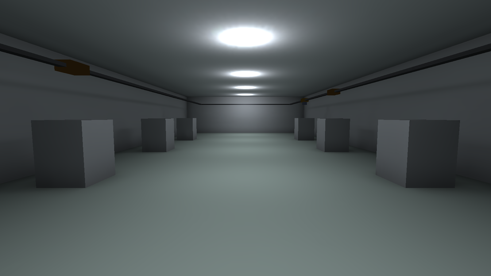

Phase 7 · Station 01
교통 제어 — 구간 점유와 정체
Phase 5의 차량은 서로를 통과했다. 일방통행 루프라 겹쳐도 굴러갔지만, 실제 OHT/AGV가 매일 보는 현상 — 앞차 뒤에 줄 서서 정지, 정체의 상류 전파 — 은 하나도 재현되지 않았다. 여기서 처음으로 "한 구간엔 한 대"를 강제하고, 그 대가로 태어나는 정체를 만난다. Phase 6에서 세운 신뢰구간 보고가 이 실험의 표준 형식이다.
구간 점유란 — "다음 구간을 예약하고 출발"
구간 점유는 경로망을 구간(존)으로 나눠 한 구간에 한 대만
들이는 교통 제어다. Phase 1 Station 04의 "구간 점유·예약"을 코드 규칙으로 내리면 이렇다 —
차량은 현재 구간을 쥔 채 다음 구간을 예약(claim)하고, 예약에 성공하면 출발,
실패하면 구간 경계에서 정지해 기다린다(폐색). 철도의 폐색 제어와 같은
원리다. 콘솔 랩 examples/fleet-traffic의 SegmentController가 정확히
이 규칙을 SimResource의 Request/Release 콜백 패턴으로 구현한다.
밀도-흐름 관계 — 처리량은 오르다 꺾인다
차량을 늘리면 처리량이 계속 오를 것 같지만, 구간 점유가 있으면 임계점에서 꺾인다. 도로 교통의 밀도-흐름 관계(fundamental diagram)와 같은 곡선이다 — 저밀도에서는 자유류로 흐름이 늘지만, 임계 밀도를 넘으면 서로를 막아 정체류로 흐름이 붕괴한다. Phase 2 큐잉의 "가동률↑ → 대기 폭증"이 공간에서 재현되는 것이다.
examples/fleet-traffic의 16구간 루프에서 차량을 2→4→8→12로 늘리면, 교통 제어
ON의 처리량은 107 → 212 → 354 → 234건/h로 8에서 12로 갈 때 꺾인다.
평균 반송시간도 80초에서 176초로 폭증한다. 반면 교통 제어 OFF(차량이 서로
통과)는 107 → 216 → 411 → 435로 단조 증가하고 반송시간이 평평하다 — 비현실적인
상한선이다. 제어의 값어치는 그 상한을 못 내는 대신 충돌을 막고 현실을 재현하는
데 있다.
교차로 중재와 그 부작용 — 기아·우선순위 역전
구간을 나누면 교차로에서 양보 규칙이 필요해진다. 그런데 한 흐름을 계속 양보시키면 그 흐름의 차량이 굶는다 — 기아다. 또 낮은 우선순위 차량이 구간을 쥔 채 놓지 않으면, 급한 차량이 오히려 그를 기다리는 우선순위 역전이 생긴다. 교통 제어는 충돌을 막는 대신 이 새로운 공정성 문제를 만든다 — Station 04에서 배차의 언어로 다시 다룬다.
비교표 — 교통 제어 유 vs 무
| 항목 | 제어 없음 (Phase 5) | 구간 점유 제어 (Phase 7) |
|---|---|---|
| 충돌 | 통과(비현실) | 차단 |
| 처리량–차량수 | 단조 증가 | 임계 후 붕괴(꺾임) |
| 데드락 | 불가능 | 가능(양방향 시) |
| 트윈 충실도 | 낮음 | 높음 |
정체는 느려진 것, 데드락은 멈춘 것이다. 단일 방향 루프는 항상 빈 구간이 하나 이상 있어 아무리 막혀도 순환 대기가 없다 → 데드락은 없다. 그런데 양방향 경로가 끼면 마주 오는 두 차량이 서로의 구간을 쥔 채 멈출 수 있다. 그것이 다음 스테이션의 주제다.
dotnet run --project examples/fleet-traffic -c Release가 위 꺾임과 데드락을
직접 재현한다. Station 05 실습에서 이 SegmentController를 자기 FabSim에
이식해, 차량이 앞차 뒤에 실제로 정지하는 것을 눈으로 본다.

FabSim-P7-Complete의 MiniFab — 이 팹은 이제 구간 점유 기반 교통
제어로 돈다. FabModel의 이동이 "다음 구간 Acquire → 이동 → 이전 구간
Release"로 바뀌었고, SegmentController의 점유·대기·데드락 탐지 로직을 EditMode
9개 테스트(점유 불변식·승계·wait-for 사이클 탐지)로 검증했다
(unity-cli test 통과). 천장 레일 위 차량 중 호박색은 다음 구간이
막혀 대기(폐색) 중인 차량이다(VehicleFleetView가
MaterialPropertyBlock으로 GC 없이 상태색을 밀어 준다). 단방향 루프라 순환 대기가
없어 데드락은 발생하지 않는다 — 데드락 시엔 낀 차량이 적색으로 물든다.
핵심 확인 질문
구간 점유가 막는 것과, 새로 만드는 것은 각각 무엇인가?
막는 것: 충돌(한 구간에 두 대가 겹치는 것). 새로 만드는 것: 정체(앞 구간이 막혀 경계에서 정지·대기, 폐색)와, 양방향이 끼면 데드락 가능성. 충돌을 없앤 대가로 대기·데드락이라는 새 문제를 얻는다.
밀도-흐름 곡선이 꺾이는 이유를 큐잉과 연결해 설명하라.
차량(밀도)이 임계점을 넘으면 서로의 구간을 막아 대기가 급증한다. Phase 2 큐잉에서 가동률이 1에 가까워질 때 대기가 폭증하는 것과 같은 현상이 공간에서 일어난 것이다. 대기가 늘면 완료율(흐름)이 오히려 떨어져 곡선이 우하향으로 꺾인다.
기아와 우선순위 역전은 각각 어떤 상황에서 생기는가?
기아: 한 흐름·요청이 계속 양보당해 무한정 처리되지 못할 때. 우선순위 역전: 낮은 우선순위 차량이 자원(구간)을 쥔 채 놓지 않아, 높은 우선순위 차량이 오히려 그를 기다릴 때. 둘 다 "충돌은 막았지만 공정성이 깨진" 경우다.
정체와 데드락의 결정적 차이는 무엇인가?
정체는 느려졌을 뿐 시간이 지나면 풀린다(앞 구간이 언젠가 비면 전진). 데드락은 외부 개입 없이는 영원히 멈춘다 — 서로가 서로의 자원을 기다려 아무도 전진하지 못하는 순환 대기 상태다.
단일 방향 루프에서 정체는 심해도 데드락은 왜 안 생기는가?
차량 수가 구간 수보다 적으면 항상 빈 구간이 하나 이상 있고, 그 빈 구간 앞의 차량이 전진할 수 있다. 그 전진이 자기 구간을 비우고, 그것이 뒤로 전파되므로 대기 관계가 원(순환)을 이루지 못한다. 순환 대기가 없으면 데드락도 없다.